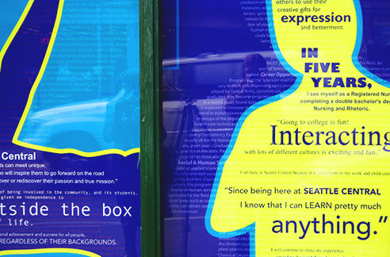

Seattle Central College
Branding | Environmental Design | Visual
Seattle Central College is a small college located in the vibrant Capitol Hill neighborhood. They have an off campus building that needed to be branded as a part of Seattle Central. We were tasked with designing a vinyl window display to brand the building. The display needed to blend the character of Seattle Central College with that of the surrounding neighborhood. We decided it was important to communicate the impact this small college has on its community, by collecting quotes from students about the college and neighborhood. We used bold colors and dynamic shapes in the design to reflect Capitol Hill’s vibrant, youthful audience.


